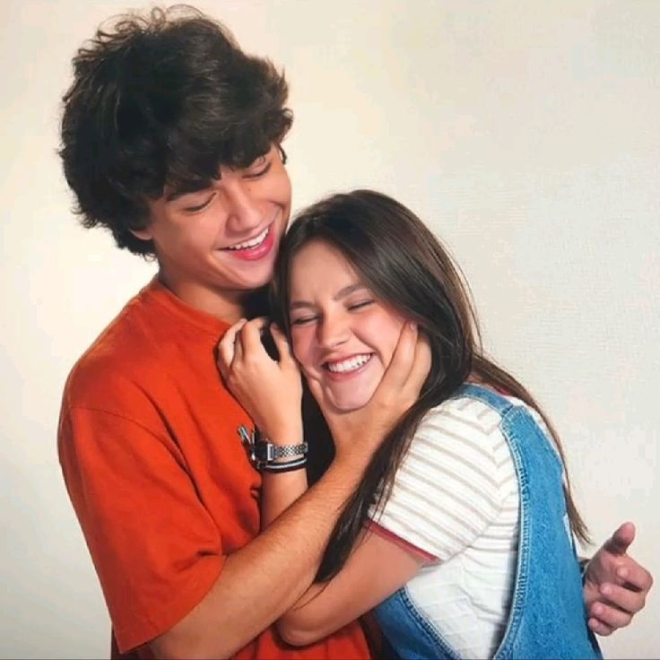

Por que Léo e Fani são meu casal literário favorito?
Léo e Fani são meu casal literário favorito porque Fazendo Meu Filme foi um dos primeiros romances que eu li e, sinceramente, me marcou de um jeito especial. Eu me indentifico muito com a Fani—ela é tímida e super apaixonada por filmes de romance, assim como eu. A leitura é tão fluida e envolvente que me sinto completamente encantada pela história. É como se Léo e Fani fossem amigos que eu acompanhei de pertinho o surgimento do amor deles.